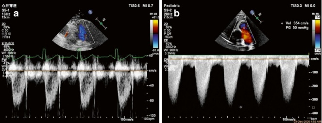
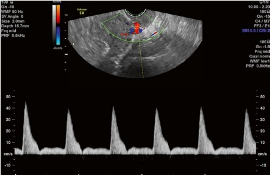
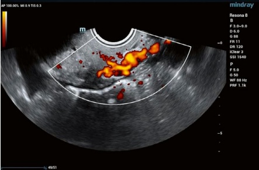

2.2.2 多普勒超声的原理与应用
当振动源（声波源）和观察者相互靠近时，声波频率会增加。相反，当它们相互远离时，频率会降低。这种频率的变化称为多普勒频移，该现象被称为多普勒效应（图 2.9）。
在多普勒超声中，声束与血流方向之间的夹角会影响观察人体红细胞运动时血流速度测量的准确性。 为尽量减少误差，当可能时，声束与血流方向之间的夹角应保持在 $ 30^{\circ} $ 以内。
探头采集的多普勒信号在临床设置中以各种方式进行处理和显示。频谱显示称为频谱多普勒，而彩色显示包括彩色多普勒血流成像（CDFI）和彩色多普勒功率图谱。
1. 频谱多普勒
基于多普勒的血流测量方法包括连续波多普勒（CW）、脉冲波多普勒（PW）和高脉冲重复频率多普勒（HPRF）。
(a) 连续波多普勒
连续波多普勒仪通常由两个换能器组成：一个持续发射超声，另一个持续接收。
连续波多普勒的优点是可以在同一频谱内显示不同深度的血流信号，而不会被限-
2.2.2 Principles and Applications of Doppler Ultrasound Imaging
When the vibration source (sound wave source) and the observer move closer together, the frequency of the sound wave increases. Conversely, when they move apart, the frequency decreases. This change in frequency is called the Doppler shift, and the phenomenon is known as the Doppler effect (Fig. 2.9).
In Doppler ultrasound, the angle between the sound beam and the direction of blood flow can affect the accuracy of the blood flow velocity measurement when observing the movement of human red blood cells. To minimize error, the angle between the sound beam and blood flow direction should generally be kept within $ 30^{\circ} $ when possible.
The Doppler signals acquired by the probe are processed in various ways and displayed differently in clinical settings. Spectral displays are referred to as spectral Doppler, while color displays include color Doppler flow imaging and color Doppler power mapping.
1. Spectral Doppler
Blood flow measurement methods based on Doppler include continuous wave Doppler (CW), pulsed wave Doppler (PW), and high pulsed repetition frequency Doppler (HPRF).
(a) Continuous wave Doppler
A continuous wave Doppler unit typically consists of two transducers: one continuously transmits ultrasound, while the other continuously receives it.
The advantage of continuous wave Doppler is that it can display blood flow signals at different depths within the same spectrum without being lim-

由高速血流引起。然而，缺点是它不能确定信号源的确切位置。连续波多普勒系统常用于临床实践中检测高速血流，特别是在心脏（图 2.10）。
(b) 脉冲波多普勒
脉冲波多普勒的基本原理涉及间歇性发射脉冲波、一种距离选择技术（可对特定深度的血流进行分析）以及选择接收回波信号以处理局部信号。 探头发射一系列脉冲波，这些波传播到采样体积并经过一定时间后返回到换能器。
多个因素影响脉冲波多普勒系统的效能，主要是脉冲重复频率（PRF）、采样深度和探头频率。
PRF 指的是每单位时间内发射的脉冲波组数，它与两次脉冲组之间的间隔时间成反比。换句话说，PRF 越高，时间间隔越短。PRF 的一半被称为奈奎斯特频率。 当频率偏移超过奈奎斯特极限时，发生混叠，导致无法显示正确或完整的频谱图样，或无法确定频谱的方向和大小。
在临床实践中，PRF限制了可检测的最大速度（通常在1至2 m/s之间）。这使得它不适合测量高速血流，特别是在心血管疾病等情况下，血液速度可能超过5–6 m/s。 由于采样深度与PRF成反比，采样深度越大，对于给定探头频率可检测的最大血流速度越低。
在生殖医学中，脉冲波多普勒主要用于测量子宫动脉血流、内膜动脉血流和
ited by high-speed blood flow. The disadvantage, however, is that it cannot identify the exact location of the signal source. Continuous wave Doppler systems are commonly used in clinical practice to detect high-speed blood flow, particularly in the heart (Fig. 2.10).
(b) Pulsed wave Doppler
The underlying principle of pulsed wave Doppler involves the intermittent emission of pulse waves, a distance-selective technique (which selects blood flow at a specific depth for analysis), and the selective reception of back-scattered signals for processing localized signals. The probe emits a series of pulse waves, which travel to the sampling volume and return to the transducer after a certain period of time.
Several factors affect the efficacy of a pulsed wave Doppler system, primarily the pulse repetition frequency (PRF), sampling depth, and transducer frequency.
PRF refers to the number of pulse wave sets emitted per unit of time, which is inversely proportional to the time interval between two pulse sets. In other words, the higher the PRF, the shorter the time interval. One-half of the PRF is known as the Nyquist limit frequency. When the frequency shift exceeds the Nyquist limit, aliasing occurs, leading to a failure to display the correct or complete spectral pattern or to identify the direction and size of the spectrum.
In clinical practice, PRF limits the maximum velocity that can be detected (typically between 1 and 2 m/s). This makes it unsuitable for measuring high-speed blood flow, especially in conditions like cardiovascular diseases where blood velocities may exceed 5–6 m/s. Since the sampling depth is inversely proportional to the PRF, the greater the sampling depth, the lower the maximum blood flow velocity that can be detected for a given transducer frequency.
In reproductive medicine, pulsed wave Doppler is mainly used to measure uterine arterial blood flow, endometrial arterial blood velocity, and

其他相关参数。下面，我们以子宫动脉（图 2.11）为例，简要演示如何进行多普勒频谱分析：
频谱的方向代表血流的方向。在常规设置下，朝向探头的血流显示为正值， 对应于基线以上的频谱部分（图像中的红色和蓝色条代表血流方向，红色表示血流向探头，蓝色表示血流远离探头）。 基线通常设置在频谱刻度的中心，但可以上下调整以与测得的速度量值对齐。例如，图显示子宫动脉血流谱呈阳性。 基线可以降低，使频谱波形与中位对齐。
非孕期女性的子宫动脉通常呈高阻力血流，其频谱分为收缩期和舒张期。收缩期显示尖峰，而舒张期则表现出驼峰状的波形和明显的早期舒张凹陷。 收缩期尖峰的最高点代表血流的最大速度，通常以cm/s测量。
血流的频谱形态在身体不同部位是不同的。例如，图2.10a所示正常肺瓣口处的血流频谱模式与子宫动脉的血流频谱模式不同。 此外，频谱的灰度反映了采样体积内相同速度的红细胞数量——颜色越深，该速度下的红细胞数量越多，反之亦然。 血流中的湍流可以通过频谱伴随的粗噪声检测到。
2. 彩色多普勒
彩色多普勒血流成像（CDFI）(CDFI)，是从脉冲波多普勒发展而来的，是第一个能够非侵入性、实时观察心脏和血管内血流的技术。其成像机制与频谱多普勒相似，但它将血流的分布和方向呈现在二维
other related parameters. Below, we will use the uterine artery (Fig. 2.11) as an example to briefly demonstrate how Doppler spectrum analysis is conducted:
The direction of the spectrum represents the direction of blood flow. Under routine settings, blood flow toward the probe is displayed as positive, corresponding to the portion of the spectrum above the baseline (the red and blue bars in the image indicate the direction of blood flow, with red representing flow toward the probe and blue indicating flow away from the probe). The baseline is typically positioned in the center of the spectral scale but can be adjusted up or down to align with the magnitude of the measured velocity. For example, the figure shows that the uterine artery blood flow spectrum is positive. The baseline can be lowered so that the spectral waveform aligns with the mid-position.
The uterine artery in nonpregnant women typically has a high-resistance flow, and its spectrum is divided into systolic and diastolic phases. The systolic phase shows a sharp peak, while the diastolic phase displays a humplike peak and a visible early diastolic notch. The highest point of the systolic spike represents the peak velocity of blood flow, usually measured in cm/s.
The spectral morphology of blood flow varies across different parts of the body. For instance, the spectral pattern of blood flow at the normal pulmonary valve orifice in Fig. 2.10a differs from that of the uterine artery. Additionally, the grayscale of the spectrum reflects the number of erythrocytes at the same velocity in the sampling volume—the darker the color, the greater the number of erythrocytes at that speed, and vice versa. Turbulence in the blood flow can be detected by coarse noise in the audio accompanying the spectrum.
2. Color Doppler
Color Doppler flow imaging (CDFI), developed from pulsed wave Doppler, is the first noninvasive, real-time technique capable of visualizing blood flow in the heart and blood vessels. Its imaging mechanism is similar to that of spectral Doppler, but it presents the distribution and direction of blood flow on a 2D

图像。它通过将提取的信号转换为红色、蓝色和绿色来显示血流的大小和方向信息，以便可视化。
影响彩色多普勒成像的主要因素是时间分辨率、速度分辨率和空间分辨率。时间分辨率是指实时显示血流的能力。 彩色帧率过低会影响结构和血流的显示。速度分辨率是指实时区分不同速度血流的能力。当速度超过奈奎斯特限频时，可能会发生彩色混叠。 空间分辨率是指实时准确显示血流方向的能力，主要通过彩色血流的宽度来体现。
图2.12显示了非妊娠期正常子宫动脉的彩色血流图像。白色扇形框代表采样框，其大小设置会影响彩色血流的显示。 通常，此框的大小应仅包含观察区域。采样框内的不同颜色代表血流方向，常规设置中，红色表示流向探头，蓝色表示远离探头的血流。 色彩的亮度指示血流的速度：颜色越亮，血流越快；反之亦然。
此外，根据观察部位的血流速度，调整合适的速度比例和彩色增益也很重要。 为了检测低速血流，应降低速度刻度以提高检出率；相反，对于高速血流，应提高速度刻度以防止颜色混叠。 彩色增益（即颜色亮度）也应根据检测到的血流速度进行调整。过高的增益会导致弥散的、闪烁的彩色斑点，应逐渐降低增益直到彩色斑点消失。
3. 能量多普勒
能量多普勒超声检查，也称为能量多普勒成像 (PDI)，利用血液中红细胞的强度或能量分布进行成像（图 2.13）。虽然 CDFI 反映了血流的速度、方向和变化，但 PDI 关注的是多普勒信号的功率，
image. It displays information about the magnitudes and directions of blood flow by transforming the extracted signals into red, blue, and green colors for visualization.
The main factors that affect color Doppler imaging are temporal resolution, velocity resolution, and spatial resolution. Temporal resolution refers to the ability to display blood flow in real time. A color frame rate that is too low can impair the display of structures and blood flow. Velocity resolution refers to the ability to distinguish blood flows at different speeds in real time. When the velocity exceeds the Nyquist limit frequency, color aliasing may occur. Spatial resolution refers to the ability to accurately display the directionality of blood flow in real-time, primarily shown by the width of the colored blood flow.
Figure 2.12 shows a color flow image of normal uterine arteries in a nonpregnant woman. The white fan-shaped box represents the sampling frame, and its size setting can affect the display of color flows. Generally, the size of this box should be set to encompass only the observation area. The different colors within the sampling frame represent the directions of blood flow, with the routine setting of red for flow toward the probe and blue for flow away from the probe. The brightness of the color indicates the speed of the blood flow: the brighter the color, the faster the blood flow, and vice versa.
Additionally, it is important to adjust the appropriate speed scale and color gain based on the blood flow speed at the observation site. For detecting low-speed blood flow, the speed scale should be lowered to improve detection; conversely, the speed scale should be increased for high-speed blood flow to prevent color aliasing. The color gain (i.e., color brightness) should also be adjusted according to the detected blood flow speed. Excessive gain results in diffuse, flickering color spots, and the gain should be gradually reduced until the color spots disappear.
3. Power Doppler
Power Doppler ultrasonography, also known as Power Doppler Imaging (PDI), utilizes the intensity or energy distribution of red blood cells in the bloodstream for imaging (Fig. 2.13). While CDFI reflects the velocity, direction, and speed changes of blood flow, PDI focuses on the power of the Doppler signals,
对低速血流特别敏感。PDI比CDFI有几个优点：
(a) 对低速血流的敏感性增加，可检测到更宽速度范围内的血流信号。
(b) 显示的血流模式受观察角度影响较小，有助于观察不同区域的血流分布和灌注模式。
(c) 它避免了当速度超过奈奎斯特极限时在CDFI中可能出现的彩色马赛克。
making it particularly sensitive to low-velocity blood flows. PDI offers several advantages over CDFI:
(a) Increased sensitivity to low-velocity blood flow, allowing for the detection of blood flow signals across a broader range of velocities.
(b) The ability to display blood flow patterns that are relatively unaffected by the angle of view, facilitating the visualization of blood flow distributions and perfusion patterns in different regions.
(c) It avoids the color mosaics that can occur in CDFI when velocities exceed the Nyquist limit.